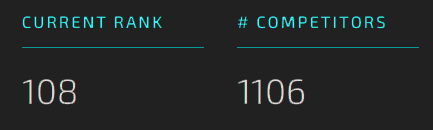

Open Cities AI Challenge
Segmenting Buildings for Disaster Resilience
`Competition Overview
Open Cities AI Challenge: Segmenting Buildings for Disaster Resilience is a competition hosted by DRIVENDATA which aims to accelerate the development of more accurate, relevant and usable open-source AI models to support mapping for disaster risk management in African cities.
The objective of this challenge is to map building footprints only by having access to drone imagery and thus simulating an event of a natural hazard. Participants are tasked to build an AI model to classify the presence or absence of buildings on a pixel by pixel basis.
Course Overview
This competition was selected as our CS513 autonomous agents class project. As image segmentation was revolutionized by the use of deep convolutional neural networks and is one of the most complex tasks in computer vision, this project was also a decent fit for this class.
Project Stats
The following tables show some basic and technical information about our project.
- General Stats
- Programming Language: Python
- Code Format: Jupyter Notebook
- Code Environment: Google Colab
- Implemented Framework: Keras
- Techincal Stats
- Deep Learning Model: U-net
- Metrics: Average Accuracy, Jaccard
- Loos Function: Binary Crossentropy
- Optimizer: Adam
Results
In the following images, we can see the results that we achieved. On the left, we present the original image, while the right mask is generated by our model.
For more information you can always check out our short presentation and our report. The source code is also available for download.
This competition was completed on March 16th and our team “La Geo Stormers” was ranked 108th out of 1106 participants.
About
Michalis Galanis
mgalanis2000@gmail.com
Kostantinos Vlachos
konosv98@hotmail.com